OKU-YATSUGATAKE / ALTITUDE 1300m
都会から週末、もうひとつの暮らしへ。
標高1300mの八ヶ岳の自然の中で、畑、DIY、山小屋づくり、焚き火、仲間との語らい。
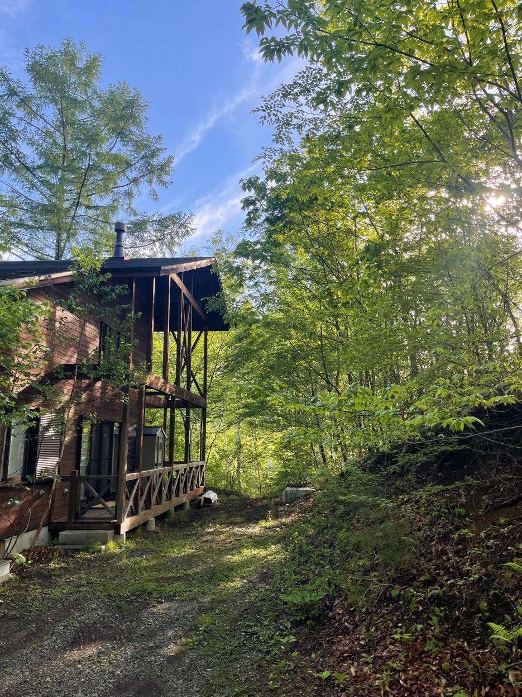
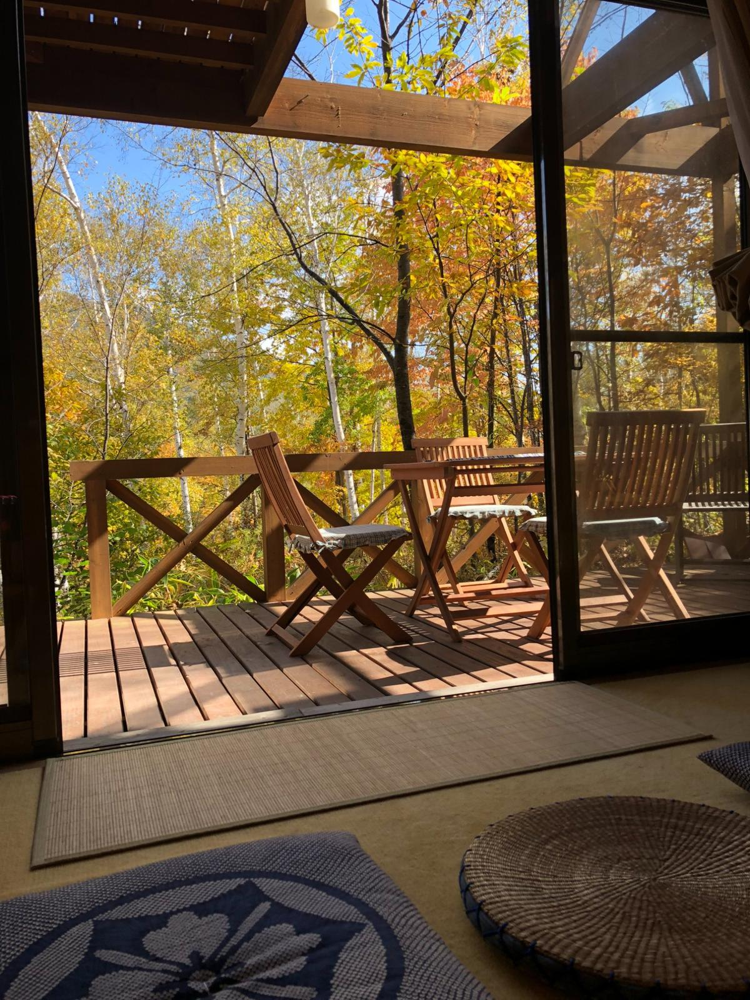
CONCEPT
都会で仕事に追われ、心も体も限界を迎えた僕が、都会との二拠点生活から数えて、八ヶ岳暮らしも11年。
自然の中で暮らしながら、畑を耕し、山小屋をDIYし、厳しい自然とも向き合ってきました。
大変なこともたくさんありました。でも、自分の手で暮らしをつくる楽しさや、好きなことを楽しむ喜びを知りました。
そして今、思うことがあります。
この自然暮らしを、一人で楽しむだけではもったいない。
畑も、山小屋も、貸別荘も、八ヶ岳の豊かな自然も。
これからは、同じように自然暮らしを楽しみたい仲間と分かち合い、一緒に育てていきたい。
週末だけでもいい。移住しなくてもいい。
自分の好きなことを楽しみながら、
もうひとつの暮らしを始めてみませんか。
STEP 1
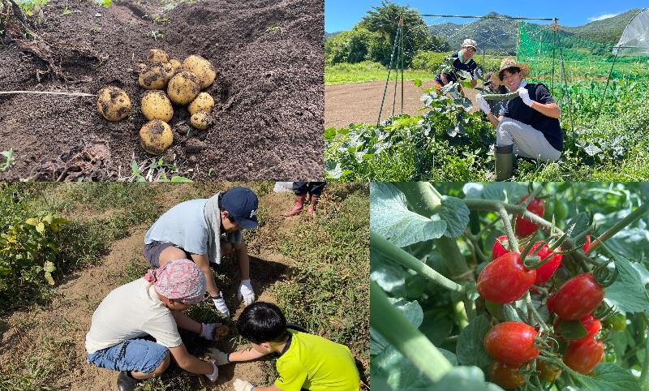
これまで約5年間、八ヶ岳で畑に関わってきました。一人では持て余してしまうこともあった畑を、これからは仲間と一緒に育てたい。
春に植えて、夏に育て、秋に収穫する。採れた野菜をみんなで味わう。そんな季節の楽しみを分かち合いたいです。
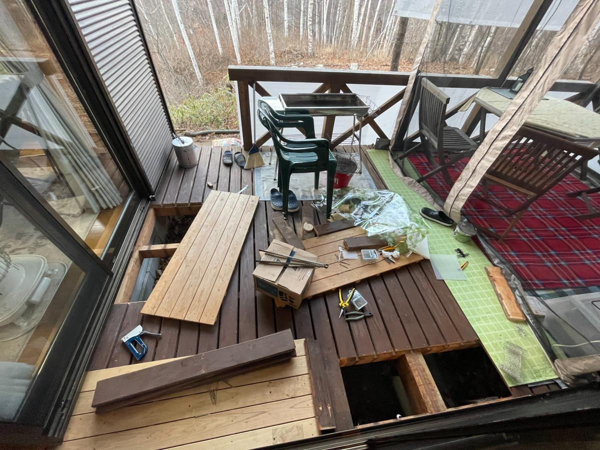
標高1300mの厳しい自然環境の中、寒さや不便さに向き合いながら、少しずつ暮らしを整えてきました。まだまだ手を加えたい場所がたくさんあります。
これからは一人で頑張って完成させるのではなく、仲間と一緒に楽しみながら育てていきたいです。
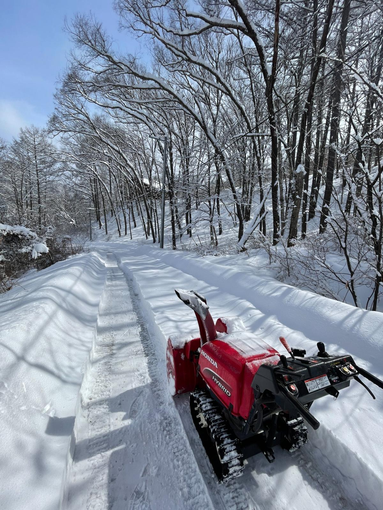
草刈り、除雪、山菜採り、スズメバチのトラップづくりなど。八ヶ岳の暮らしには、季節ごとに欠かせない作業があります。
一人ではひと苦労の作業も、仲間と一緒なら季節のイベントに。自然と向き合いながら、この土地で暮らす手ごたえを一緒に味わいましょう。
→ 横にスワイプ
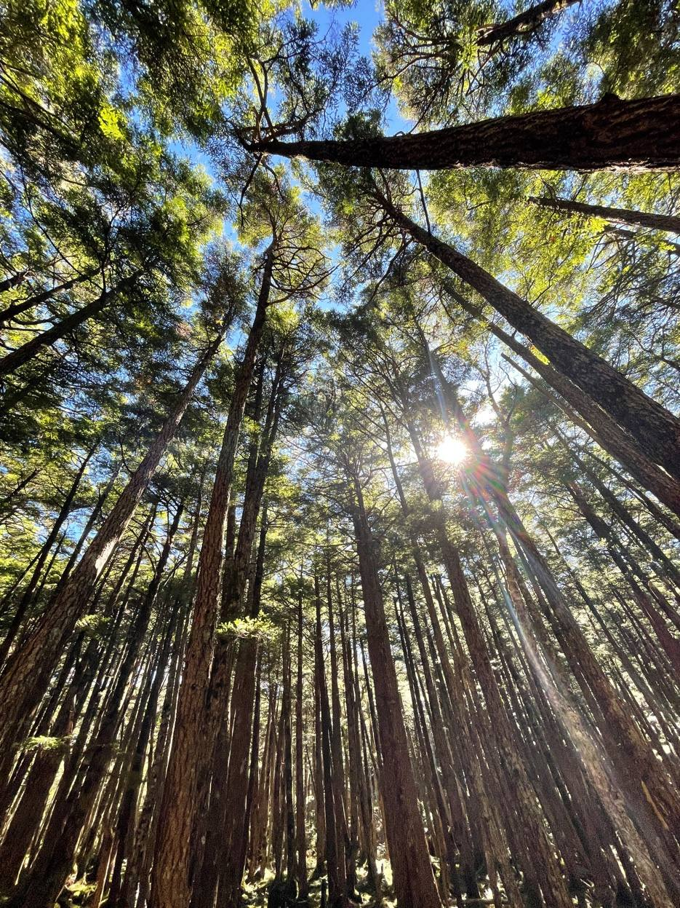
04白樺の森を歩き、季節ごとに表情を変える八ヶ岳の自然を、肌で味わう。
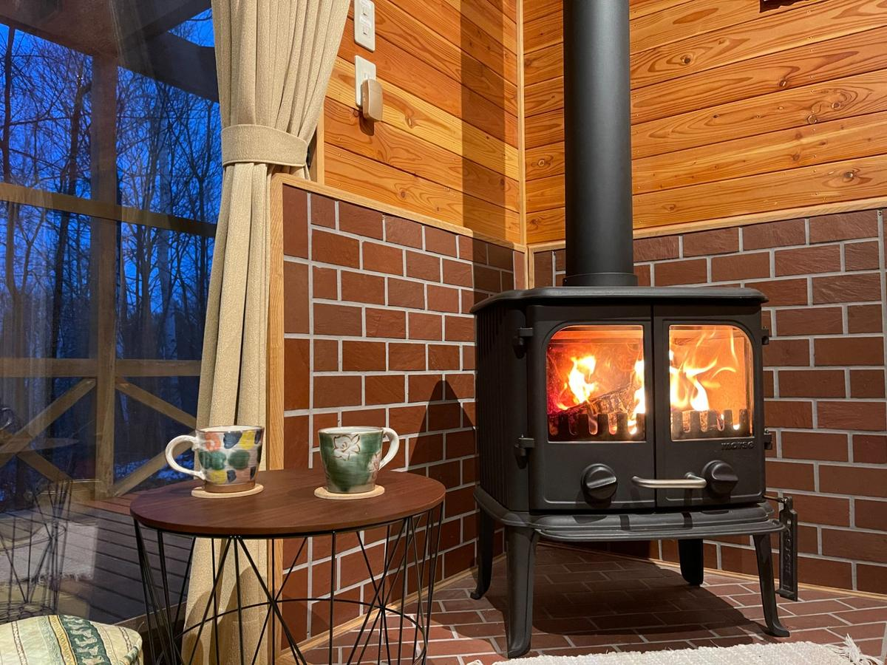
05火を囲んで料理をして、薪ストーブのそばでゆっくり語り合う夜。
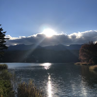
06これまで数回開催してきた聖地巡礼。好きなアニメの舞台を、仲間と訪ねる旅に。
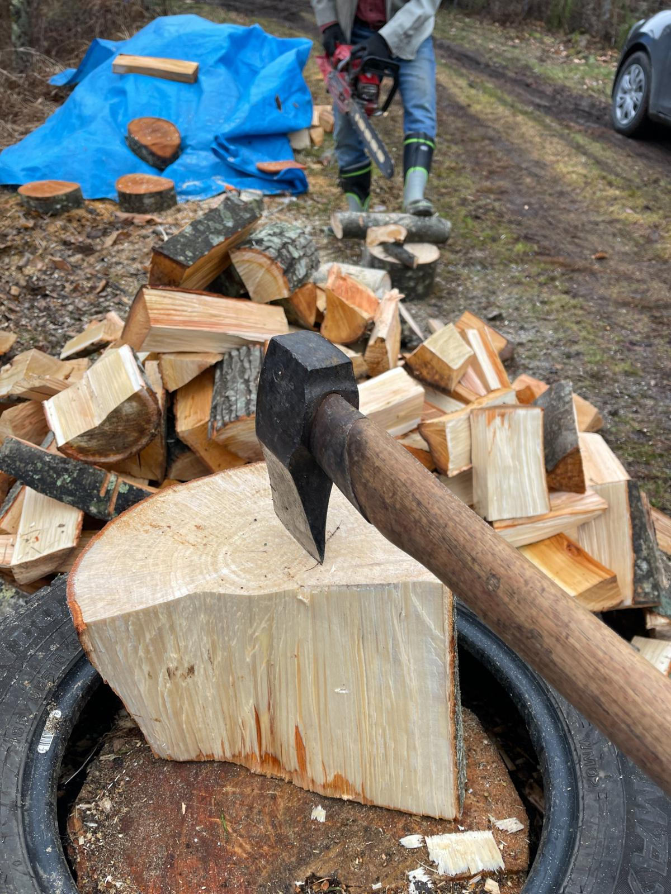
07好きなこと、得意なことを持ち寄って、新しい活動や仕事に挑戦する。
STEP 2
いきなり長く参加しなくて大丈夫です。まずは一日、八ヶ岳の自然暮らしにふれてみるところから。
奥八ヶ岳 Nature Base では、これから様々なイベントを予定しています！「自然暮らし1DAY体験会」などに実際に参加・体験できる入口です。一緒にDIYして、薪棚を作ったりする体験会も予定しています！
日程は準備中です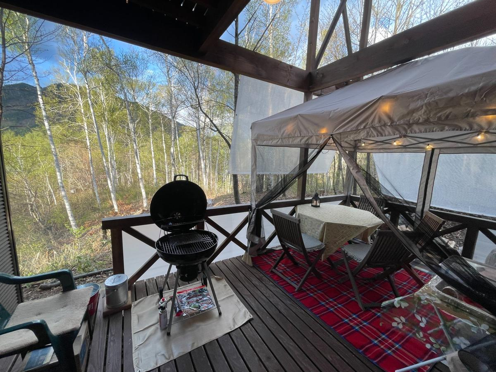
DIY、畑、自然暮らしなど、テーマを決めて季節をまたいで続けることで、一日では味わえない変化や手ごたえを、仲間と一緒に感じていく。そんな場を考えています。
ただいま準備を進めています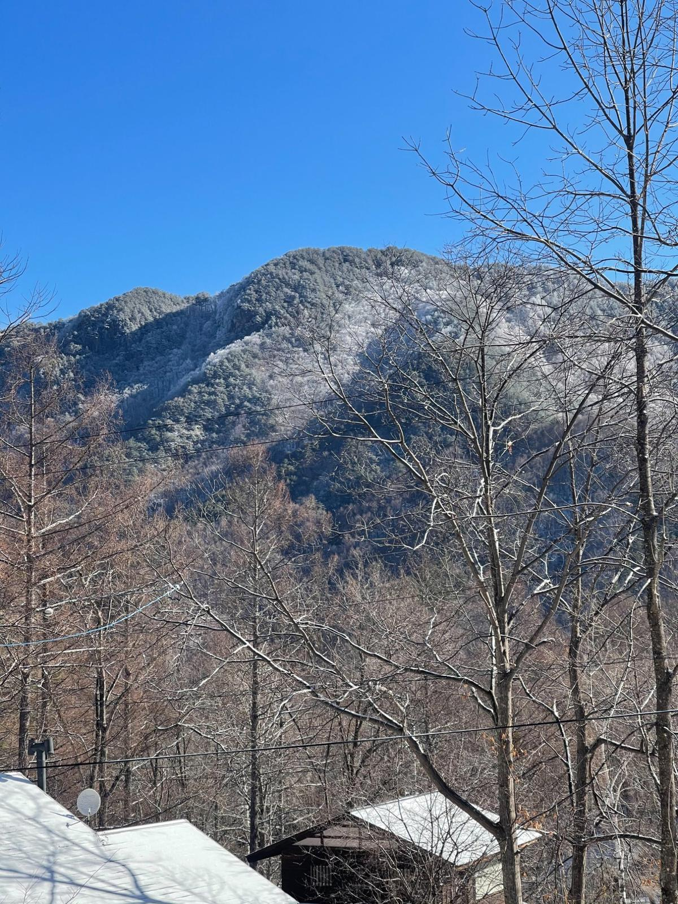
「好きなことが分からない」から始めていい。自然暮らしを楽しみながら、「これ、ちょっと楽しいかも」を少しずつ増やしていく。
そこで生まれた「これ、やってみたい！」を仲間と形にし、好き・遊び・仕事の境界線をなくして、活動や収入づくりにも一緒に挑戦していく。そんな構想を育てています。
ただいま準備を進めています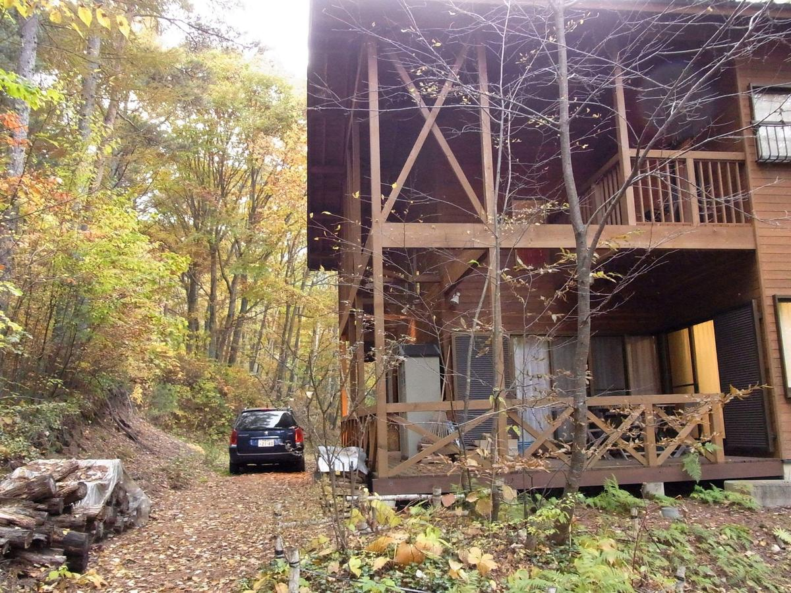
まずは気軽に、語る会や1DAY体験から。
STEP 3
奥八ヶ岳の自然、畑、山小屋、そして貸別荘・結びの杜。ここ全部が「奥八ヶ岳 Nature Base」です。
それぞれの場所を活かしながら、仲間と自然暮らしを楽しみ、少しずつ育てていきます。
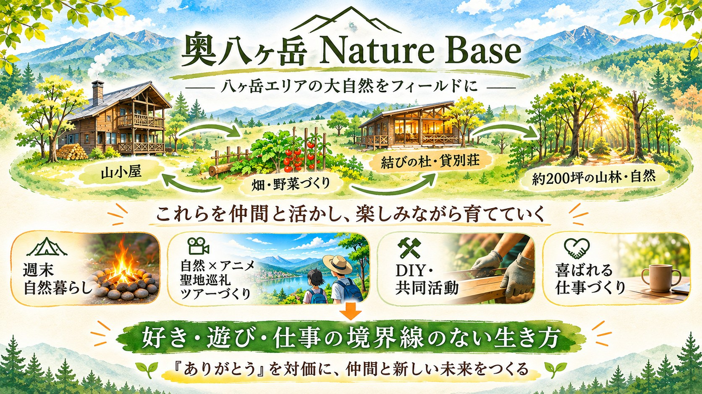
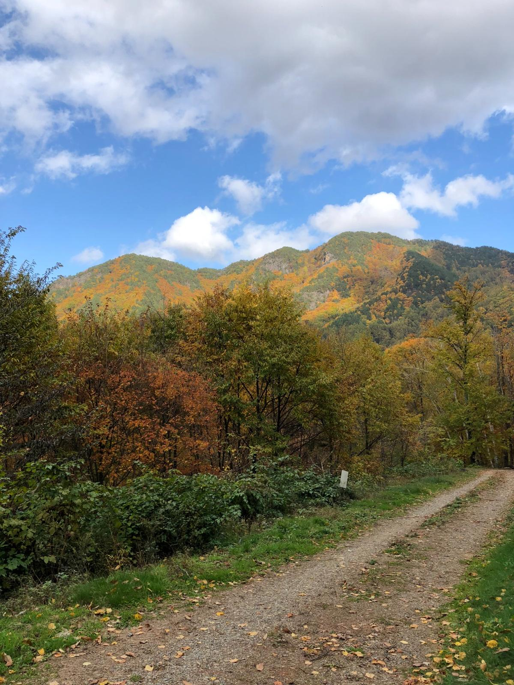
白樺の森に囲まれた、標高1300mの暮らし。朝の澄んだ空気、新緑と紅葉、雪に包まれる冬。森の小道を歩くだけで、季節の移ろいが体に入ってきます。少し足をのばせば、八ヶ岳のトレッキングへ。
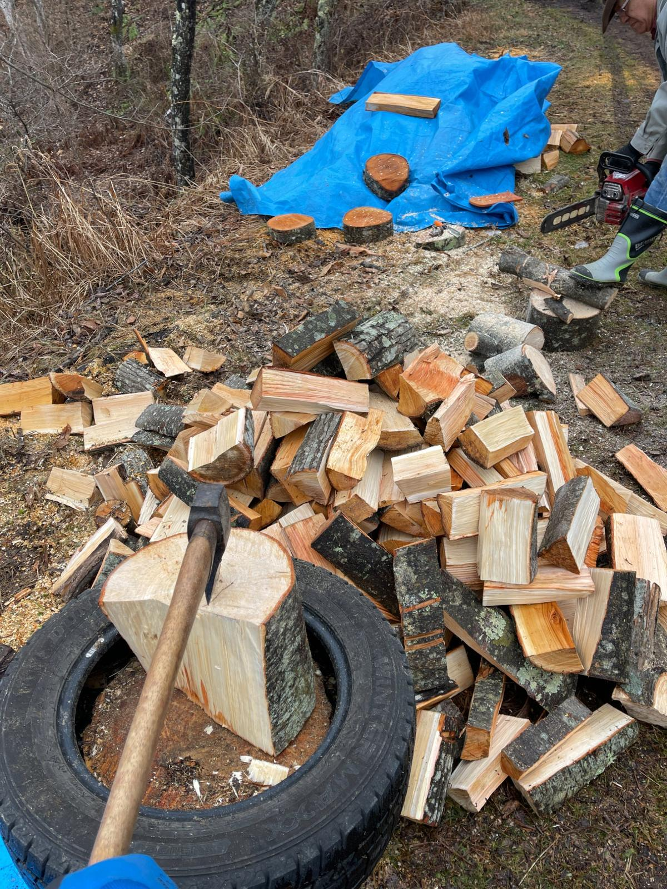
夏専用だった古い別荘に住み始め、冬を越せる暮らしの場へと、自分の手で少しずつ整えてきた山小屋。FF式ストーブも自分で取り付けました。まだまだ手を入れたい場所ばかり。これからは仲間と一緒にDIYし、試行錯誤しながら育てて、いずれ泊まれる場所にしていきます。
約5年、八ヶ岳の畑で野菜づくりに関わってきました。春のじゃがいも植えから、夏の手入れ、秋の収穫まで。土にふれ、季節を待ち、採れたての野菜をみんなで料理して味わう。一人では持て余していた畑を、これからは仲間と育てます。
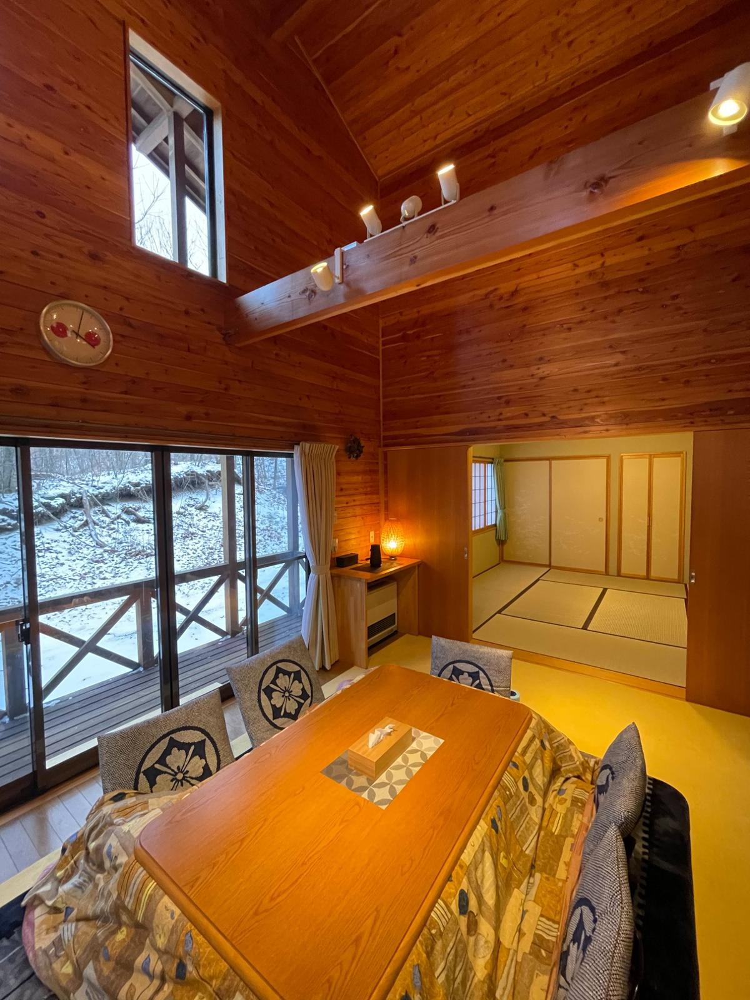
森の中に建つ、一日一組限定の貸別荘。海外からのお客様も訪れる宿です。薪ストーブの火を囲み、料理をして、語り合い、ゆっくり眠る。活動の日には、みんなが集まり、泊まる場所になります。
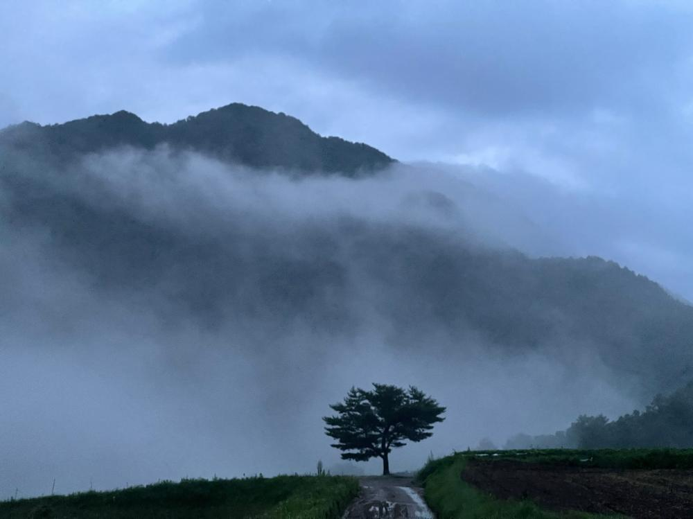
STEP 4
都会で仕事に追われ、心身の限界を迎えた経験。
そこから、自然の中で暮らし、好きなことに夢中になるうちに、自分自身を大切にする生き方を、この奥八ヶ岳で取り戻してきました。
ここでは、自分を大切にしなければ暮らしていけない。だからこそ、自然と自分を満たせるようになったのだと思います。
かつての僕と同じように、頑張りすぎて自分を見失いかけている人が、ここで自分を取り戻せたら。そんな場所を、仲間と一緒につくっていきたい。
人生は、もっと楽しんで生きていい。
まず自分を満たし、
溢れた分で人を満たす。
まだ完成した場所ではありません。だからこそ、一緒に育てていける仲間と出会えたらうれしいです。1DAY体験への参加希望、日々の発信、奥八ヶ岳 Nature Base ができていく過程——すべて Instagram でつながれます。
語る会や1DAY体験に参加してみたい方は、Instagramのダイレクトメッセージからご連絡ください。